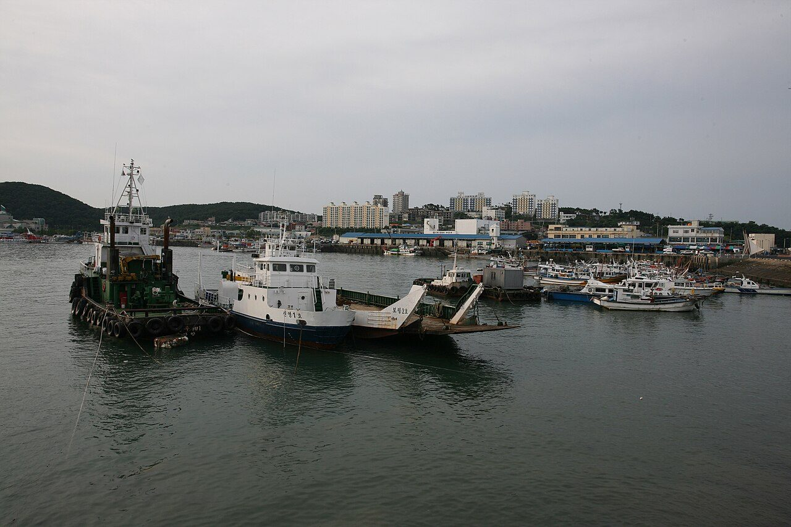
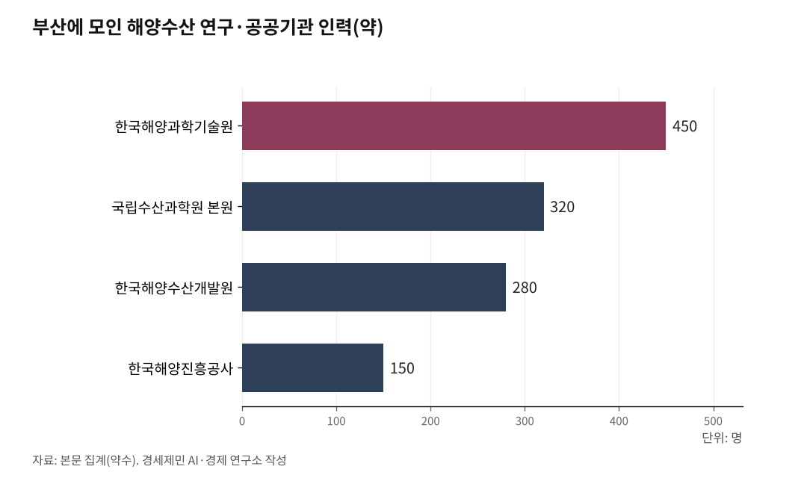

[인천해양산업, 생존기로⑬] 수산 R&D, 부산과 전남엔 있고 인천엔 없다
부산엔 본원 320명, 여수엔 남해연구소, 인천엔 지역 연구소 하나
1. 인천 수산업 8만1000톤, 서해 최대 어항의 민낯
인천은 서해 최대 어항이다. 연안부두 수산시장은 꽃게·밴댕이·새우 등 서해산 수산물 집산지로 수도권 2600만명의 밥상을 책임진다.

그런데 숫자를 들여다보면 사정이 다르다. 인천 어업 생산량은 약 8만1000톤, 생산액은 약 4200억원이다(2023년). 국내 전체 어업 생산량 368만톤의 2.2%에 그친다.
전남이 국내 수산물 생산 1위(국내 전체의 약 60%)인 것과 비교하면 격차가 뚜렷하다. 인천 수산업은 양식 기반이 약하고 연근해 어업에 의존한다. 서해 수온 상승과 어족 자원 감소가 겹치면서 생산량은 정체 상태다.

2. 부산엔 본원 320명, 인천엔 지역 연구소 하나
수산 R&D 중심은 부산이다. 국립수산과학원 본원이 부산 기장군에 있다. 약 320명이 기후환경연구부, 수산자원연구부, 양식산업연구부 3개 연구부를 운영한다. 산하에 동해·서해·남해 등 8개 지역 연구소를 거느린다.
부산에는 본원 외에 한국해양수산개발원(KMI) 약 280명, 한국해양과학기술원(KIOST) 약 450명, 한국해양진흥공사(KOBC) 약 150명이 집적돼 있다. KIOST는 이사부호(5900톤), 온누리호(1422톤) 등 대형 연구선을 운용한다.
부경대학교 수산과학대학과 한국해양대학교가 수산 인력을 양성한다. 해양수산부 2024년 R&D 예산 5118억원 가운데 부산 배정 비중은 42.3%다.
인천에는 국립수산과학원 서해수산연구소가 중구 선녀바위로에 있다. 국립수산과학원 소속 지역 연구소다. 본원은 부산에 있고, 인천에는 이 지역 연구소 하나뿐이다.
3. 여수·목포도 인천보다 낫다
여수에는 국립수산과학원 남해수산연구소가 있다. 바다숲, 바다목장, 종자방류, 총허용어획량(TAC, Total Allowable Catch) 조사로 남해권 수산자원을 관리한다.
전라남도 해양수산과학원 여수지원도 있다. 수산 양식 기술, 해양환경 모니터링, 수산물 품질 관리를 연구한다. 전남대학교 수산해양대학이 남해권 수산 인재를 키운다.
목포에는 목포해양대학교가 있다. 학부 약 1500명, 대학원 약 200명이다. 2027년 한국해양대와 통합해 부산 본교, 목포 특화캠퍼스가 된다.
국립수산과학원 수산식물품종관리센터도 목포에 있다. 목포수산식품지원센터(건립비 222억원)는 수산가공 R&D와 기업지원을 담당한다. 목포 해상풍력플랫폼센터(357억원)까지 2025년 6월 준공됐다.
인천에는 이 가운데 어느 것도 없다. 해양대학이 없고, 수산가공 R&D 센터가 없고, 수산 전문 인력양성 기관이 없다.
4. 서해수산연구소 하나로 서해를 감당하나
서해수산연구소는 1993년 발족했다. 서해 연근해 수산시험과 연구를 담당한다. 서해 꽃게, 참조기, 갈치 등 주요 어종 자원량 조사와 어장환경 모니터링이 핵심 업무다.
문제는 이 연구소 하나가 서해 전체를 감당한다는 점이다. 부산에 본원 320명이 있고, 여수에 남해수산연구소가 있고, 강릉에 동해수산연구소가 있다. 서해에는 인천 서해수산연구소와 군산 갯벌연구센터뿐이다.
서해는 한중 공동어로수역 관리, 꽃게 자원 보전, 갯벌 생태계 연구, 미세플라스틱 오염 대응 등 연구 수요가 집중되는 해역이다. 한강하구 미세플라스틱 오염도는 세계 2위로 평가된다.
남북교류가 재개되면 서해 수산자원 공동조사와 공동어로 연구도 추진해야 한다. 서해는 남북 접경 해역이다. 이 연구를 수행할 거점이 인천에 없다.
5. 경인경제권 2600만명, 수산 R&D 거점이 없다
정리하면 이렇다. 부산에는 국립수산과학원 본원, KMI, KIOST, 부경대 수산과학대학, 한국해양대가 있다. 여수에는 남해수산연구소, 전남대 수산해양대학, 전남 해양수산과학원 여수지원이 있다. 목포에는 해양대학교, 수산식품지원센터, 수산식물품종관리센터가 있다.
인천에는 서해수산연구소 하나다.
인천 해양산업 업체수는 부산 대비 83%, 종사자수는 78%에 이른다. 해양수산 R&D 예산은 부산의 10%다. 수산 분야로 좁히면 격차는 더 벌어진다.
서해 수산자원은 기후변화와 남획으로 줄어들고 있다. 연구 없이 관리할 수 없고, 관리 없이 자원을 지킬 수 없다. 경인경제권 2600만명의 수산물 수요를 안정적으로 충족하려면 서해권 수산 R&D 거점 구축이 시급한 과제다.
참고문헌
·"어업생산통계(2023년)", 해양수산부 보도자료, 2024.2.23. https://www.mof.go.kr/doc/ko/selectDoc.do?docSeq=55766&menuSeq=971&bbsSeq=10
·"어업생산량 및 양식량", 국가지표체계(e-나라지표), 2025. https://www.index.go.kr/unity/potal/main/EachDtlPageDetail.do?idx_cd=2748
·"국립수산과학원 조직 현황", 국립수산과학원, 2025. https://www.nifs.go.kr/contents/actionContentsCons0041.do
·"서해수산연구소", 위키백과, 2024.9. https://ko.wikipedia.org/wiki/%EC%84%9C%ED%95%B4%EC%88%98%EC%82%B0%EC%97%B0%EA%B5%AC%EC%86%8C
·"전남 수산물 생산량 213만톤, 전국 1위 유지", 헤럴드경제, 2026.3.13. https://biz.heraldcorp.com/article/10693791
※ 이 기사는 AI 프로그램 클로드를 활용해 작성했습니다.
사진 출처
· [대표사진] Yu Nam-hae, "Boryeong Daecheon Port.jpg", 위키미디어 공용, 공공누리 제1유형, https://commons.wikimedia.org/wiki/File:Boryeong_Daecheon_Port.jpg
※ 이 기사는 인공지능을 활용해 작성했습니다.
관련기사
- [인천해양산업, 생존기로⑭] 6.2GW 자체 전력으로 AI 데이터센터를 돌려라
- [인천해양산업, 생존기로⑫-하] 남북철도 미지수, 중국 항만을 활용하라
- [인천해양산업, 생존기로⑫] 남북교류 재개되면, 인천은 준비돼 있나
- [인천해양산업, 생존기로⑪] 10조달러 경제권 관문, 전략도 기관도 없다
저작권자 © AI경세제민 무단전재 및 재배포, AI학습 및 활용 금지